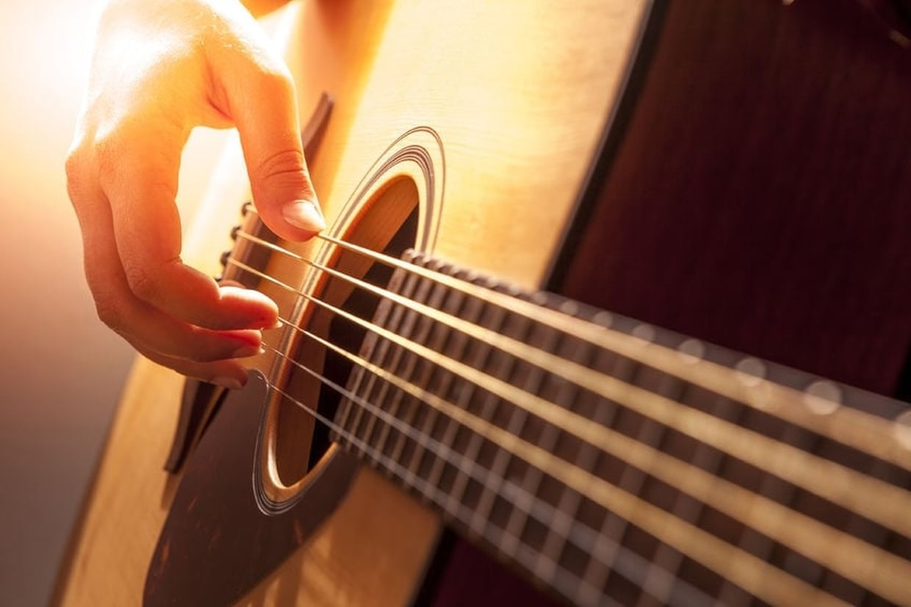

Bienvenue sur mon profil !
Je m’appelle Enguerrand, j’ai 18 ans. Je suis élève en première année de BBA à l’ESSEC.
Passionné par les jeux-vidéos et plus particulièrement par l’Esport, mon rêve est de pouvoir en faire mon métier.
Je suis un joueur compétitif sur le jeu Super Smash Bros Ultimate et Melee.
Esport
Esport sur super smash bros ultimate : nous sommes une association qui organiser des tournois sur le jeu super smash bros ultimate en Ile de France. Vous pouvez vous inscrire via start.gg ou via le site en rentrant vos coordonnées. Nous avons un tournoi chaque semaine appelée weekly dans paris au Kremlin Bicêtre. Pour plus d’infos vous pouvez me contacter sur linkedin

Le Rock
Le rock est un type de danse qui se pratique avec un partenaire (du sexe opposé traditionnellement). Les musiques sur lesquelles le rock se danse sont les musiques des années 80. Le rock est très populaire lors de soirées mondaines et rallyes en France.
ROCK !Guitare
la guitare est un instrument à cordes pincées très populaire dans la musique. Que ce soit pour jouer du rock’n roll, du jazz ou de la pop, la guitare est très présente. Son fonctionnement est relativement simple, pincer les cordes créé des vibrations qui sont amplifiées dans la caisse de résonance ce qui produit le son. Jouer des notes modifie les ondes créées par les cordes.
